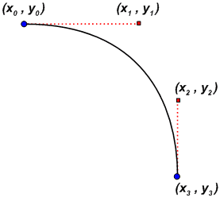
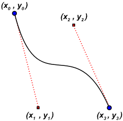
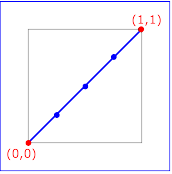
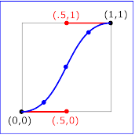
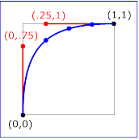
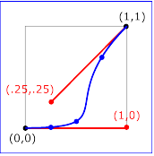

Animating with keyTimes and keySplines | Internet Development Index |
The timing and animation features provided by HTML+TIME (Timed Interactive Multimedia Extensions) make it easier to add basic animations to Web pages—just set values for a particular property of a target element over a simple duration, and you've created an animation. What's not immediately obvious is that HTML+TIME also incorporates some of the vector-drawing capabilities of the Scalable Vector Graphics (SVG)  syntax to provide Web authors with more sophisticated control over timing intervals and paths. Using the keyTimes and keySplines attributes, you can divide an animation element's simple duration into multiple segments, speed up or slow down the animation at multiple rates during a single duration, and specify values for the animation to reach at particular points in its duration. Even better, HTML+TIME makes it possible to use these features without writing script. Animating with keyTimes and keySplines enables you to do the following:
syntax to provide Web authors with more sophisticated control over timing intervals and paths. Using the keyTimes and keySplines attributes, you can divide an animation element's simple duration into multiple segments, speed up or slow down the animation at multiple rates during a single duration, and specify values for the animation to reach at particular points in its duration. Even better, HTML+TIME makes it possible to use these features without writing script. Animating with keyTimes and keySplines enables you to do the following:
- Apply spline interpolation to timing segments of an animation. In other words, you can vary the rate at which the animation function calculates the values that drive the animation. This provides much closer control over timing and positioning during animations, but keeps your code remarkably simple.
- Match time values with Bézier control points to include multiple smooth changes in element motion over the course of a single animation.
- Use splines to set varied rates of change when animating colors.
Although you can accomplish some of these effects by using script or separate animateMotion elements with the accelerate and decelerate attributes, it quickly becomes difficult to coordinate the timing of the various animation elements. The keyTimes and keySplines attributes provide a more flexible, immediate way to control your animation's interpolation.
- Prerequisites
- Terms
- A Quick Look at Paths and Splines
- Manage Animation Intervals with keyTimes
- Use keyTimes with a Values List
- What is a keySpline?
- Use keyTimes and keySplines with animateColor
- Multiple Animations with Multiple Timing Segments
- Related Topics
Prerequisites
To use this overview most effectively, you should have some understanding of the HTML+TIME?A HREF="../time2/behaviors/time2.html">time2 behavior and Introduction to DHTML Behaviors. Specifically, this overview assumes that you know how to create an Extensible Markup Language (XML) namespace and import and reference the time2 behavior. For more information about how to do this, see Incorporate the time2 Behavior and Authoring HTML+TIME.
Terms
Bézier curve. A curve defined by cubic equations using the coordinates of two endpoints and two control points. Bézier curves are named after mathematician Pierre Bézier. If you've used software with vector-drawing capabilities, like Microsoft?Visio? you've probably used Bézier curves.
Interpolation. An operation that estimates a value of a series or function between two known values. In the context of HTML+TIME, an animation interpolates between given coordinates or color values over a duration.
Scalable Vector Graphics (SVG). A language for describing vector graphics in XML. SVG is currently a World Wide Web Consortium  candidate. HTML+TIME's path attribute uses a subset of the SVG path syntax.
candidate. HTML+TIME's path attribute uses a subset of the SVG path syntax.
Simple duration. The duration of an animation element or time container, as set by the dur property, which distinguishes simple time from individual timing segments within an animation.
Spline. Another term for a curve drawn with Bézier equations. In the context of HTML+TIME, spline might also mean the set of Bézier control points, corresponding to a values list, that define the interval pacing of an animation. A more detailed description of HTML+TIME's implementation of splines follows this section.
Vector Markup Language (VML). An XML-based markup language, supported in Microsoft?Windows?and Microsoft Office 2000, that uses the Cascading Style Sheets (CSS), Level 2 (CSS2)  to determine layout. Some of the examples in this overview animate a simple Vector Markup Language (VML) shape for demonstration purposes.
to determine layout. Some of the examples in this overview animate a simple Vector Markup Language (VML) shape for demonstration purposes.
A Quick Look at Paths and Splines
If you know all about splines and are familiar with HTML+TIME's implementation of the Scalable Vector Graphics (SVG) path and spline syntax, you might prefer to skip to the Manage Animation Intervals with keyTimes section, which describes how to use splines for timing intervals with keyTimes and keySplines. If you'd like a quick explanation of splines as they apply to paths and motion, continue reading this section.
To help clarify HTML+TIME's implementation of the keyTimes and keySplines attributes, it's useful to first discuss splines in the context of animating motion and using the path attribute. HTML+TIME implements SVG syntax for paths. The following example animates a DIV element along a line between two points. Remember that any property you animate with HTML+TIME must be explicitly set on the element. You can set the property with a style class, but the examples that follow use inline style settings for simplicity's sake.
<HTML XMLNS:t ="urn:schemas-microsoft-com:time">
<HEAD>
<STYLE>
.time {behavior: url(#default#time2);}
</STYLE>
<?IMPORT namespace="t" implementation="#default#time2">
</HEAD>
<BODY>
<t:ANIMATEMOTION begin="1" dur="3" fill="hold" targetElement="oDiv"
path="M 0 0 L 200 200" />
<DIV id="oDiv" class="time" style="background-color:#FFCC00;
position:absolute;height:40;width:120;top:110;left:10;text-align:center;
font-size:18;border-style:solid">
Moving DIV</DIV>
</BODY>
</HTML>The path attribute starts a new subpath at (0,0) with the absolute "move to" command M, and draws a line to (200,200) with the L command. In much the same way, you could set vertical or horizontal paths, specify multiple values in order to draw polylines, or specify Bézier curves. For detailed information about the PATH attribute, its possible values, and related elements and properties, see HTML+TIME: Animation.
The following example animates the same DIV element along a curved path.
<t:ANIMATEMOTION begin="1" dur="3" fill="hold" targetElement="oDiv" path="M 0 0 C 150 0 250 150 250 250" /> <DIV id="oDiv" class="time" style="background-color:#FFCC00;position:absolute; height:40;width:120;top:110;left:10;text-align:center;font-size:18; border-style:solid"> Moving DIV</DIV>
In this case, the PATH attribute draws a cubic Bézier curve from (0,0) to (250,250) using two control points at (150,0) and (250,150). Because the DIV is offset from the top and left by 10 pixels, it finishes the animation's duration at (260,260). Here's a diagram that shows a similar curve with the control points.

In much the same way, you can change the control points to produce a recurved path.
<t:ANIMATEMOTION begin="1" dur="3" fill="hold" targetElement="oDiv" path="M 0 0 C 0 300 250 0 250 300" />
Here's the same idea in a diagram showing the control points.

You can create a similar path by using two curve segments and the corresponding control points. As your curves become more complex, this becomes a more useful strategy. In the following example, the animation begins at (0,0) as before, and animates the DIV along a curve to the endpoint (150,150) using the control points (250,50) and (250,100). The first segment's endpoint becomes the start point of the next segment, which draws another curve between (150,150) and (250,300) using two more control points, (0,200) and (0,250).
<t:ANIMATEMOTION begin="1" dur="3" fill="hold" targetElement="oDiv" path="M 0 0 C 250 50 250 100 150 150 0 200 0 250 250 300" />
Manage Animation Intervals with keyTimes
Now that you've acquainted yourself with the basic ideas that govern cubic Bézier curves, you can apply those ideas to timing intervals. In the same way that a spline describes a curve by specifying change in the path between two endpoints over a given range of coordinate values, the keyTimes and keySplines attributes can help you specify change in other values that you want to animate over time—color, speed, position, style, and so on. The following discussion concerns some ways to use keyTimes and keySplines.
Use keyTimes with a Values List
The keyTimes attribute enables you to designate intervals, or timing segments, that subdivide an animation's simple duration. The keyTimes attribute specifies a semicolon-delimited list of time values. These values represent a proportional offset into the simple duration of the animation. When used with calcMode settings of linear or spline, use the following restrictions with keyTimes settings. The first value must be 0; subsequent values must be greater than 0 and less than 1; and the last value must be 1. Each successive time value in the series must be greater than or equal to the preceding time value.
If you use the keyTimes attribute with calcMode set to discrete, the rules are slightly different. The first keyTimes value must be 0; subsequent values must be greater than 0 and less than 1. The last value, however, must be greater than the preceding value, but can be less than 1. This is because the discrete setting for the calcMode attribute specifies that the animation reflects each value in a values list exactly at the corresponding keyTimes value. If you set the last keyTimes value to 1, your animation will only attain the last value in the values list at the time the animation's duration ends—the viewer won't see it.
Keep in mind that if the values you specify for keyTimes do not meet these requirements, the animation either will not work as expected or will not work at all. Similarly, if you use keyTimes with the values attribute, you must specify the same number of values in keyTimes as in the values list. Otherwise, the animation will not work.
Suppose you want to animate the width of a simple vector-drawn shape. Use the values attribute to set a list of values for the shape's width; use the keyTimes list to specify the length of the time segments for each interval between width values during the course of the animation. How the animation interpolates the shape's width during those intervals depends on the value set for the animation's calcMode attribute, which can be set to linear, discrete, or spline. Note that setting calcmode to paced overrides any keyTimes list, since the paced value specifies that the animation interpolate the width at an even pace through the animation's duration.
<t:ANIMATE id="oAnim" begin="1" dur="5" fill="hold" targetElement="oOval" attributeName="width" calcMode="linear" values="100; 300; 500" keyTimes="0;.7; 1" /> <v:oval id="oOval" class="time" fillcolor="red" style="position:absolute; top:200;left:50;width:100;height:100" />
In this example, the keyTimes list divides the animation's duration into two sections: the first, from the start of the animation to 3.5 seconds (or .7 of the duration); the second, from 3.5 seconds to the end at 5 seconds. Notice that the oval widens more quickly toward the end of the duration. Because calcMode is set to linear, the animation uses a linear interpolation to calculate the oval's width during each time segment. During the first segment, the width increases by 200 pixels in 3.5 seconds, but during the second segment, the width increases by 200 pixels in 1.5 seconds, requiring a faster rate of change.
There are several ways to use keyTimes. You might set calcMode to discrete and use the keyTimes list to set specific timing for many quick changes to a particular property during an animation. In this case, keyTimes lets you specify all the timing changes for a single property with a single animation element, helping simplify your markup if you have other complex timelines involved with the same animation. The keyTimes attribute is also useful when you want to begin or end other animation timelines when the property you're animating reaches a certain value. You can associate a value in the values list with a value in the keyTimes list and organize the timing of other animation elements accordingly.
What is a keySpline?
To understand the keySplines property, it's helpful to keep in mind the preceding discussion of Bézier curves and control points. The keySplines property enables you to determine how an animation is interpolated during a time segment. With keySplines, instead of the location coordinates you specify with the PATH attribute, you specify timing coordinates for the pacing of an animation's simple duration. In other words, the values you set for keySplines are the Bézier "control points" for a curve. The curve represents the rate of change in the animation's target attribute over the time segment.
The values you set with keyTimes represent the anchor points of this curve. Because each successive keyTimes value represents a proportional offset into the simple duration of the animation, the key times begin at 0 and end at 1, with 1 representing the whole duration. For this reason, the coordinates of the control points you specify with keySplines must be greater or equal to 0 and less than or equal to 1. Each interval between keyTimes values defines a time segment for which you can set keySplines values, so you'll always have one fewer set of keySplines values than keyTimes values.
Though keyTimes and keySplines determine the interval pacing of the animation, there's one more set of values to keep in mind: the values for the property you want to animate. In the case of an animateMotion element, you could provide these values with the path attribute or with coordinates in a values list. For other animation elements, the values to be interpolated by the animation element appear in the values list. To put it still another way: the values list is the set of "hoops" through which you want the animation to jump. It can jump according to whatever interpolation you set—setting keyTimes and keySplines ensures that your interpolation takes on a certain "shape" (rate of change) between hoops.
In the following example, the keySplines settings for a simple straight-line animateMotion element specify that the animation moves quickly at the start of its duration and decelerates toward the end. You can also compare the animation using keySplines to the same animation with calcMode set to linear or discrete.
<t:ANIMATEMOTION id="oAnim" begin="1" dur="5" fill="hold" targetElement="oOval" calcMode="spline" path="M 0 0 L 500 0" keyTimes="0;1" keySplines="0 .75 .25 1" /> <v:oval id="oOval" class="time" fillcolor="red" style="position:absolute;top:180;left:50;width:30;height:30" />
In looking at the diagrams that follow, think of the horizontal axis as the pace with which the interpolation proceeds along the timing interval. The vertical axis is the resulting value for the animation's progress, yielded by the function that underlies the keySplines property. Another way of describing this is that the horizontal axis is the input unit time for the interval, and the vertical axis is the output unit time.
 |  |
| keySplines="0???" (the default) | keySplines=".5??5?" |
 |  |
| keySplines="0?75?25?" | keySplines="1??25?25" |
To see how these values for keySplines affect an animation, click the appropriate buttons in the following example.
Use keyTimes and keySplines with animateColor
You can control the interpolation of an animated color property with keyTimes and keySplines just as you can control interpolation with motion animations. Ordinarily, you might use the to, from, or by attributes of animateColor to change the target element's color attribute from one color value to another. The animation then proceeds using linear, discrete, or paced interpolation, depending on the setting you specify for the animateColor element's calcMode attribute. However, you might want to smoothly vary the rate at which the target element's color value is interpolated across the animation's duration. To accomplish this, set one or a combination of several attributes on the animateColor element: either values and keyTimes, or keyTimes and keySplines. The following example uses animateColor to animate a shape's fill color through a series of color values.
<v:oval id="oOval" class="time" fillcolor="red" style="position:absolute;top:120;left:70;width:200;height:200" /> <t:ANIMATECOLOR id="aColor" targetElement="oOval" begin="1" dur="10" fill="hold" attributeName="fillcolor" calcMode="linear" values="red;#00FF00;#0000FF" />
By setting the keyTimes attribute on aColor, you gain finer control over the timing of the oval's color changes. To make the oval's color change slowly from red to green, and quickly from green to blue, set a shorter timing segment between the values #00FF00 and #0000FF in the keyTimes list.
<v:oval id="oOval" class="time" fillcolor="red" style="position:absolute;top:120;left:70;width:200;height:200" /> <t:ANIMATECOLOR id="aColor" targetElement="oOval" begin="1" dur="10" fill="hold" attributeName="fillcolor" calcMode="linear" values="red;#00FF00;#0000FF" keyTimes="0;.7;1"/>
By adding keySplines to this example, you can change the rate of interpolation for each segment as well as its length. In the following example, the first time segment animates the oval's fill color from red to #00FF00 (lime) over the first seven-tenths of the simple duration; it uses the keySplines values (.75 0 1 .25) to specify that the color change happens slowly at first, then gradually speeds up. At the second segment, from seven-tenths of the duration to the end, the animation uses the keySplines values (0 0 1 1) to animate the fill color from #00FF00 (lime) to #0000FF (blue). Because these values describe a straight line from (0,0) to (1,1), you see a linear interpolation from #00FF00 to #0000FF at the end of the animation. Click the Show Me button to compare the animation using keyTimes and keySplines to discrete and paced animation settings.
<v:oval id="oOval" class="time" fillcolor="red" style="position:absolute;top:70;left:100;width:200;height:200"/> <t:ANIMATECOLOR id="aColor" targetElement="oOval" begin="1" dur="10" fill="hold" attributeName="fillcolor" calcMode="linear" values="red;#00FF00;#0000FF" keyTimes="0;.7;1" keySplines=".75 0 1 .25;0 0 1 1"/>
Multiple Animations with Multiple Timing Segments
It's fairly straightforward to make a basic animation more complex by adding further animation elements and timelines. Here's a VML shape animated along a curved path. In this case, keyTimes and keySplines allow smooth acceleration and deceleration of the object to suggest inertia.
<t:ANIMATEMOTION id="o1" begin="0" dur="2.7" targetElement="vm1" path="M 200 500 C 212.5 200 225 6 287.5 0 325 2 337.5 37 350 125" calcMode="spline" keyTimes="0;.55;1" keySplines="0 0.7 0.5 0.9;0.8 0.2 0.7 0.2"> <v:oval id="vm1" class="time" fillcolor="yellow" style="position:absolute;top:50;left:50;width:10;height:10"/> </t:ANIMATEMOTION>
To make this more interesting, add a couple of short animation blocks to change the object's shape and color.
<!-- bang animation for vm1 object --> <t:ANIMATE id="c1" begin="2.3" dur=".2" calcmode="spline" targetElement="vm1" attributeName="height" values="5;50" keyTimes="0;1" keySplines="0 0.6 0.7 1"/> <t:ANIMATE id="c2" begin="2.3" dur=".2" calcmode="spline" targetElement="vm1" attributeName="width" values="5;50" keyTimes="0;1" keySplines="0 0.6 0.7 1"/> <t:ANIMATECOLOR id="c3" begin="2.3" dur=".2" calcmode="spline" targetElement="vm1" attributeName="fillcolor" values="yellow;orange" keyTimes="0;1" keySplines="0 0.6 0.7 1"/> <t:ANIMATE id="c4" begin="2.5" dur=".2" calcmode="spline" targetElement="vm1" attributeName="height" values="5;70" keyTimes="0;1" keySplines="0 0.6 0.7 1"/> <t:ANIMATE id="c5" begin="2.5" dur=".2" calcmode="spline" targetElement="vm1" attributeName="width" values="5;70" keyTimes="0;1" keySplines="0 0.6 0.7 1"/> <t:ANIMATECOLOR id="c6" begin="2.5" dur=".2" calcmode="spline" targetElement="vm1" attributeName="fillcolor" values="#FF4500;#FF1493" keyTimes="0;1" keySplines="0 0.6 0.7 1"/>
After animating the first arc, it's easier to add subsidiary shapes and animations. Though the elements in the example that follow are all grouped in a basic t:PAR time container and use specific begin times, you could also set some of the animation elements to begin relative to other elements, or relative to other events on the page. For example, you might want to play a short animation when the user moves the mouse pointer over part of your table of contents, or when the user clicks a particular part of the page. For more information, see Initiating Timed Elements with the begin Attribute.
Here's a more elaborate version of the preceding examples, with some additional shapes in motion.